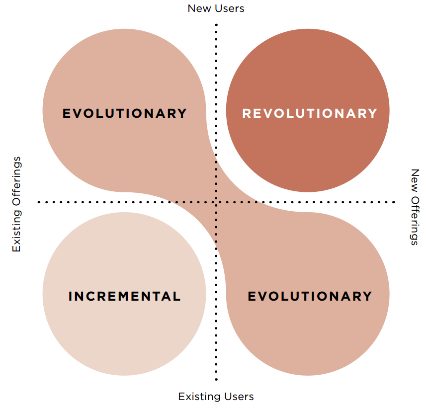
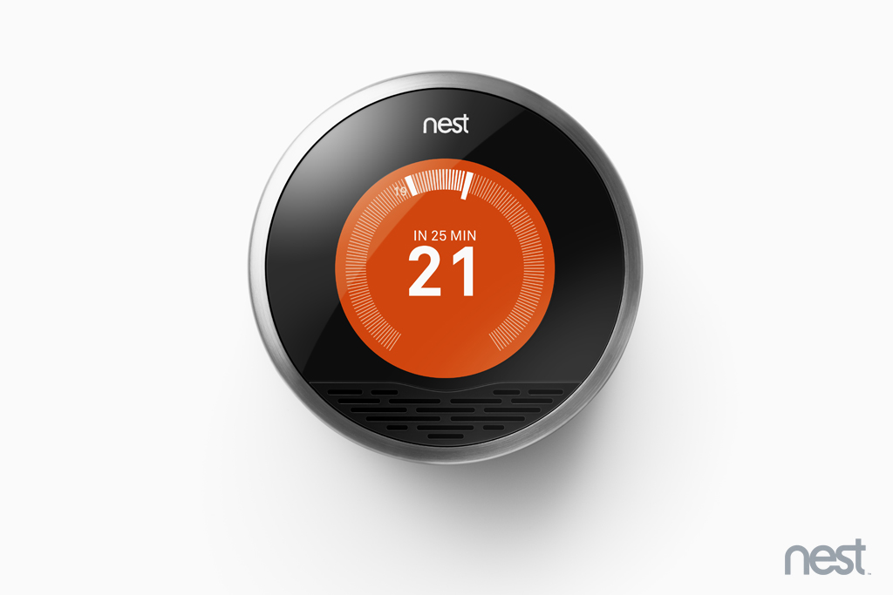
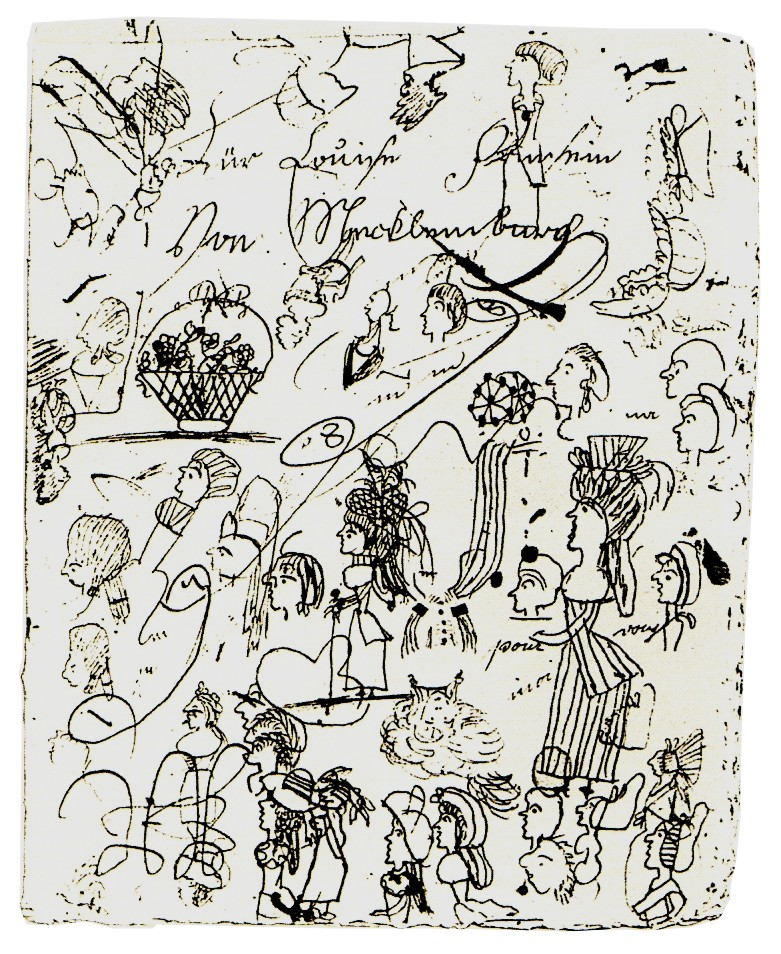
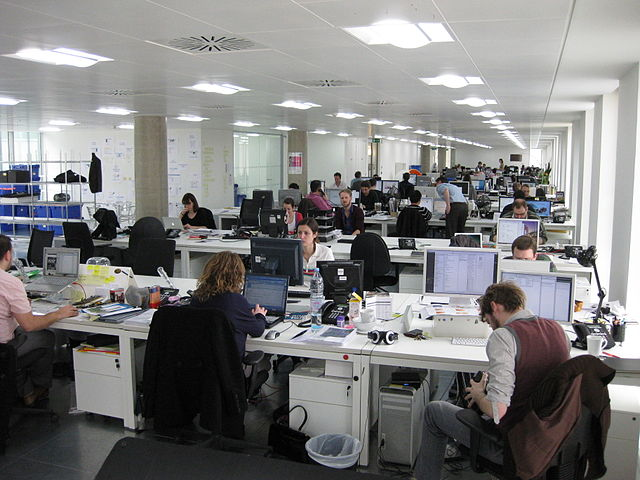

Is the user stupid?
It's the user, stupid
User-Centered Design & Prototyping
Is the user stupid?
It's the user, stupid
User-Centered Design & Prototyping
Phases of UCD
- Understand
- Create
- Deliver
Redesign the reading
experience
Empathize
Interview 1
- What, why, how, where
- Pre-/post-experience
Empathize
Interview 2
- Emotional
- Surprising
- Interesting
Analyze
Data immersion
- Common themes
- Surprises
- Esssence
Needs vs Solutions
- Jane needs a car (bad)
- Jane needs a way to get around quickly (good)
- Jane needs to be at her son's birthday party (better)
- Jane wants to build a loving relationship with her son (great insight, but can be more focused)
Synthesize
Problem definition
Ideate
Sketch crazy ideas
Feedback
Share ideas
- Don't sell ideas
- Learn, not validate
- Pay attention to reactions
Iterate
Reflect & generate a solution
- Modify existing idea, or
- Combine aspects of different ideas, or
- Something new
Prototype
Build
- Interactive
- 3D
- Can be experienced
Prototype
Forms
- 3D models
- Paper prototype
- Storyboard
- Role-playing
- Wizard of Oz
Feedback
Experience prototype
- Don't sell prototype
- Assume what you built was wrong
- Pay attention to reactions
Feedback
Demo
Reflect
What's different
- Engaging in a real person
- Unfinished work
Why UCD
The User

Users
Understand
- Who are the users?
- What is important to them?
- What is the baseline?
How to Understand
- Have beginner's mindset
- Select users to engage
- Immerse, imitate
- Go beyond what people say
Create
- Analyze
- Synthesize
- Ideate
- Prototype
- Test
- Iterate
Deliver
- Evaluate
- Desirable
- Feasible
- Viable
- Deploy
- Monitor
- Iterate
Prototyping
Ideas -> World
Prototyping
Goals
- Understand
- Explore
- Inspire
- Communicate
- Validate
Prototyping
Benefits
- Fail fast and cheap
- Divide and conquer different aspects
- Resolve ambiguities
- Engage stakeholders
Prototyping
Plan
- Goals and questions
- Scope: what to focus or not worry about
- Fidelity: low vs high detail
- Form: materials, environment
- Hypothesis of behaviour
Prototyping
Mindset
- Build to think
- Don't commit too early
- Create something to react to, not just a scaled version
- Let users experience more than one prototype
- Iterate*
*Iteration is an indicator of design success and engineering experience. [Adams, R. 2002. Understanding design iteration. In Proceedings of Common Ground International Conference, London, Design Research Society.]
Prototyping
Sharing
- Don't overexplain
- Don't correct
- Suitable context
- Get users to think aloud
- Get help to record observations
Prototyping
Analysis
- Patterns
- Grouping of themes
- Tensions, surprises
- Visualizations
From UCD to HCD
Human-centered design considers other humans
- Clients
- Distribution
- Partners...
Learn more: IDEO HCD Toolkit, dschool Design Thinking Bootcamp
UCD and Innovation
The Landscape
UCD and Innovation
Designer as facilitator
- Coaxing revolutionary ideas can be very hard
- Variable abilities in ideating and imagining
- Humans don't mean what they say, don't know what they need, are unaware of what they believe in
- Experts may be needed to envision radical tech
What can I do?
- Observe user testing sessions
- Find out how your work relates to real users
- Less hunch- and lemming-driven, more data-driven
- Fight for time to experiment
- For ****'s sake, iterate
Takeaways
Design is not about pretty things
Takeaways
Design is not about sleek and cool products
Takeaways
Design is a messy process in the journey to a solution
Takeaways
Get out of the office
Because your users are not there
Credits
Images (in order of appearance)
- liz west, "Manuscript", https://www.flickr.com/photos/calliope/306564541, CC Attribution 2.0, with modifications to lighten image;
- Roland O'Daniel, "blueberry's storyboard 2", https://www.flickr.com/photos/rlodan01/5321531740, CC Attribution-ShareAlike 2.0, with modifications to lighten image;
- Pixabay, https://pixabay.com/en/man-user-profile-person-icon-42934/, CC0 Public Domain;
- Luc Legay, "My Social network", https://www.flickr.com/photos/luc/1824234195, CC Attribution-ShareAlike 2.0, with modifications to darken image;
- Pieter Kuiper, https://commons.wikimedia.org/wiki/File:Lightblue_empty_grid.svg, Public Domain;
- IDEO, Human Centered Design Toolkit 2nd Edition, Page 135, CC Attribution-NonCommercial-ShareAlike 3.0;
- Pixabay, https://pixabay.com/en/flowers-floral-design-flora-color-98164/, CC0 Public Domain;
- Nest, "Nest Learning Thermostat showing Celsius", https://www.flickr.com/photos/nest/6286566200, CC Attribution-NonCommercial-NoDerivs 2.0;
- Luise von Mecklenburg-Strelitz, https://commons.wikimedia.org/wiki/File:Luise_Kritzelzeichnung.jpg, Public Domain;
- Phil Whitehouse, "New office", https://www.flickr.com/photos/philliecasablanca/3344142642, CC Attribution 2.0;
- Pixabay, https://pixabay.com/en/japan-tokyo-shibuya-japanese-217882/, CC0 Public Domain;
Worksheet from d.school, CC Attribution-NonCommercial, with modifications to challenge and timings.

This work is licensed under a Creative Commons Attribution 4.0 International License.
Suggestions or errata? Contact TW Hoon at GitHub (username: hoontw).